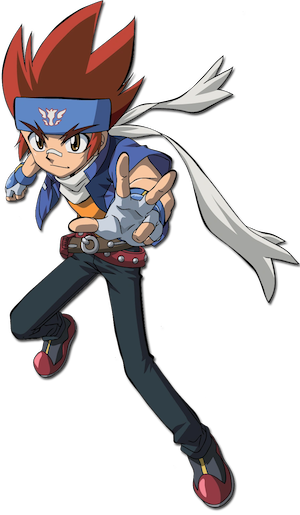
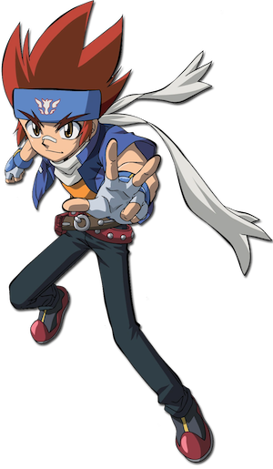

The history of Beyblades. Beyblades first spun into the world in 1999, launched by the Japanese toy company Takara (now Takara Tomy). Inspired by traditional Japanese spinning tops called “bei-goma,” Beyblades took the concept of spinning tops and transformed them into customizable battle machines, adding a level of strategy and innovation that caught the imagination of kids everywhere. The Beyblade phenomenon really took off in the early 2000s, bolstered by the popular anime series that followed the journey of young bladers mastering their craft and engaging in high-stakes battles. Each season introduced new types of Beyblades and new layers of excitement. The series showed bladers customizing their Beys with attack, defense, and stamina in mind, and it created a huge wave of interest across the globe. Beyblade soon became an international sensation, spawning tournaments, leagues, and communities of bladers competing for the thrill of victory. In the following years, Beyblade continued to evolve, introducing new “generations” like Metal Fusion, Burst, and beyond, each bringing fresh features, parts, and gameplay mechanics. The Beyblade Burst series, for instance, introduced Beyblades that could “burst” into pieces upon impact, adding an explosive element to each battle. Today, Beyblade is more than a toy—it’s a global phenomenon where enthusiasts of all ages test their strategies, tweak their designs, and let it rip in epic, heart-pounding battles!
 
